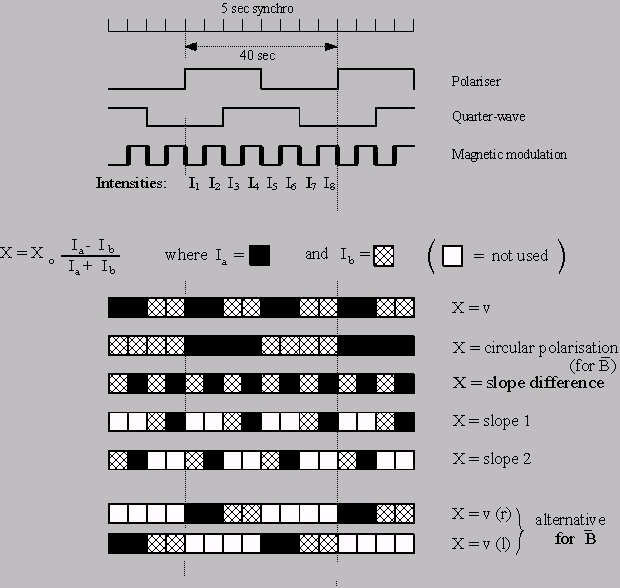

GOLF Operation - Operation modes
-
Pre-planned sequence
GOLF was designed to function in a normal scientific mode, in which the three switchable functions (Quarter-wave plate, polarisor, and magnetic modulation) were interlaced. This gives a sequence of eight configurations, which are cycled continuously every 40 seconds. The data format echoes this sequence, but transmits data separately for the two active photomultipliers PM1 and PM2.
 -
Blue-wing mode
Following some problems with the rotating mechanisms, these were stopped on April 11 1996, in an optimum position for observing the blue wing of the solar sodium line only. In this mode, The signal is switched by the magnetic modulation between two points on the blue wing, giving a total repeat cycle of 10 seconds. In the resulting data format, this is duplicated for the two detectors PM1 and PM2.
GOLF was in the blue wing mode from April 11 1996 to SoHO vacations (June 25 1998), and from November 18 2002 when we decided to switch back from the red wing mode.
-
Red-wing mode
Following the loss of the SOHO spacecraft and its subsequent recovery, the GOLF instrument was switched on October 8 1998 in a single-wing mode, but this time temporarily in the red wing. Except for the change of wing, this is otherwise similar to the blue-wing mode
The red wing mode lasted up to November 18 2002.